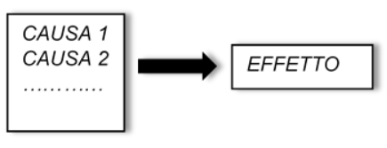
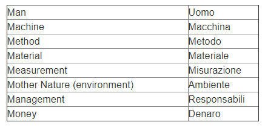
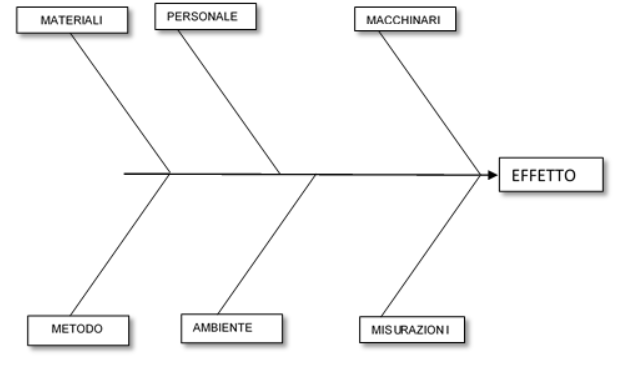
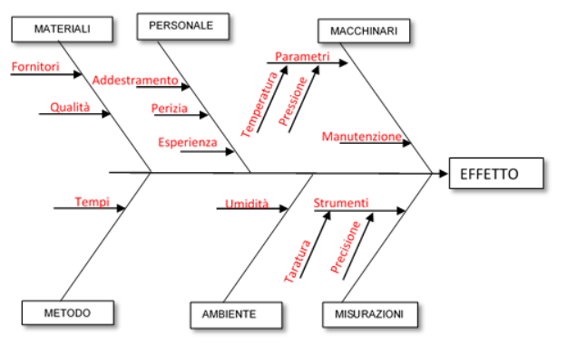

PR13.1 - Gestione delle Non Conformità e Azioni di Miglioramento
Procedura di Gestione delle Non Conformità e Azioni di Miglioramento
Revisioni
| Rev. | Data | Descrizione | Redatto | Approvato |
|---|---|---|---|---|
| 0.0 | 24/04/2026 | Prima emissione | RSGI | Amministratore Unico |
1 Introduzione
1.1 Riferimenti e Allegati
IOPR05.1.B- Regolamento di utilizzo sistema di ticketing
MDPR08.1.A – Elenco Informazioni documentate
PO16 - Gestione degli Accessi
PR11.1 - Audit Interno
PR12.1 - Riesame della Direzione
PR19.1 - Gestione del Cambiamento.
1.2 Definizioni, Acronimi, Abbreviazioni
AZIONE CORRETTIVA – azione per eliminare le cause di una non conformità e prevenirne il ripetersi
CISO - Chief Information Security Officer
NC - Non Conformità: mancato soddisfacimento di un requisito
RSGI - Responsabile del Sistema di Gestione Integrato
SGI - Sistema di Gestione Integrato.
2 Gestione delle Non Conformità e Azioni Correttive
La presente sezione della procedura definisce la gestione delle Non Conformità rilevate e stabilisce come mettere in atto le adeguate azioni correttive.
Le NC possono essere riscontrate in differenti ambiti:
-
prodotti e servizi non realizzati come previsto o progetti che non > rispettano la pianificazione o gli obiettivi prefissati > (non conformità di produzione - > progettazione);
-
prodotti e servizi consegnati ai clienti non in linea con quanto > concordato (reclami e segnalazioni dei > clienti);
-
prodotti e servizi consegnati dai fornitori e non in linea con > quanto concordato (non conformità di > fornitura);
-
mancati rispetto di una politica o procedura o di un requisito > della norma (non conformità di > processo) come ad esempio:
-
mancanza di efficacia di procedure o istruzioni specifiche;
-
mancanza di istruzioni specifiche;
-
mancanza di adempimento di un requisito della norma di > riferimento;
-
mancanza implementazione di un controllo di sicurezza;
-
fallimento nell'attuazione dei controlli di sicurezza;
-
ecc.
-
La gestione delle NC è in carico in tutte le fasi a RSGI.
2.1 Non conformità di produzione - progettazione
Le non conformità di produzione - progettazione riguardano progetti, prodotti e servizi non realizzati come previsto e si verificano spesso nell'ambito della valutazione della qualità quando si individuano prodotti o semilavorati difettosi o errori nell'erogazione di un servizio.
Ciò nonostante, queste non conformità possono avere impatti sulla sicurezza delle informazioni (per
esempio, un difetto in un prodotto software o il ritardo di un progetto).
A supporto dell’individuazione di questa tipologia di NC una serie di esempi:
-
mancanza di requisiti di sicurezza per le interfacce di input > degli utenti di un'applicazione informatica;
-
mancata connessione di un nuovo servizio informatico ai sistemi di > monitoraggio degli eventi e delle vulnerabilità;
-
mancata previsione di un adeguato controllo accessi alla sede > dell'organizzazione;
-
backup non riuscito;
-
difetto nel software di un'applicazione dovuto ad un errore di > programmazione;
-
errore di configurazione di un prodotto informatico;
-
ritardo nella conclusione di un progetto di installazione di una > nuova applicazione informatica;
-
non completa esecuzione dei test di continuità operativa > pianificati.
Alcune non conformità di questa categoria sono incidenti o vulnerabilità.
Per la gestione di questa tipologia di NC, RSGI si avvale delle differenti competenze necessarie e di eventuali differenti strumenti per comprenderne le cause e attuare azioni risolutive.
Le fasi per la gestione di questa tipologia di NC sono:
-
individuazione
-
analisi delle cause
-
azione correttiva
-
chiusura.
2.2 Reclami e segnalazioni di clienti
I reclami dei clienti sono anch'essi delle non conformità e devono essere gestiti prevedendo sempre una risposta alle segnalazioni.
In alcuni casi, i reclami potrebbero essere infondati e ritirati dopo che il cliente è stato contattato.
Viene comunque tenuta traccia anche dei reclami infondati in modo da tenerli sotto controllo fino a quando non si è compresa la causa.
Accanto ai reclami vengono considerare anche le segnalazioni dei clienti perché potrebbero rivelare errori commessi dall'organizzazione e sottendere delle NC.
Come le non conformità di produzione e di progettazione, anche i reclami e le segnalazioni dei clienti sono rientrano in una valutazione di qualità che di sicurezza delle informazioni, ma potrebbero essere causate anch’esse da vulnerabilità e incidenti relativi alla sicurezza delle informazioni e quindi essere analizzate con attenzione.
Per la gestione di questa tipologia di NC, RSGI si avvale delle differenti competenze necessarie e di eventuali differenti strumenti per comprenderne le cause e attuare azioni risolutive.
Le fasi per la gestione di questa tipologia di NC sono:
-
individuazione
-
analisi delle cause
-
azione correttiva
-
chiusura.
2.3 Non conformità di fornitura
Le non conformità di fornitura sono quelle relative a prodotti e servizi non corretti consegnati dai fornitori. Come le altre non conformità afferiscono ad una valutazione di qualità, ma potrebbero avere impatti sulla sicurezza delle informazioni e, pertanto, vanno gestite con attenzione, soprattutto quando riguardano il mancato soddisfacimento dei requisiti di sicurezza concordati in fase contrattuale o di mancato rispetto di requisiti cogenti in particolar modo per i fornitori nominati Responsabili del Trattamento di dati personali.
Per la gestione di questa tipologia di NC, RSGI si avvale delle differenti competenze necessarie (anche legali) e di eventuali differenti strumenti per comprenderne le cause e attuare azioni risolutive.
Le fasi per la gestione di questa tipologia di NC sono:
-
individuazione
-
analisi delle cause
-
azione correttiva
-
chiusura.
2.4 Non conformità di processo
Le non conformità di processo sono normalmente individuate nel corso degli audit interni o degli audit di seconda o terza parte. La correzione di una non conformità di processo potrebbe richiedere un cambiamento di procedura, non necessariamente un adeguamento delle persone alle procedure.
Spesso, a meno che non si tratti di piccoli errori, una non conformità di processo, per evitare che si ripeta, richiede di intraprendere una serie di passi più dettagliati rispetto alle altre NC:
-
individuazione
-
trattamento o correzione
-
analisi delle cause
-
azione correttiva
-
verifica dell’efficacia
-
chiusura.
2.5 Individuazione
Una NC può emergere come risultato quindi di:
-
rilevazione da parte dello staff;
-
rapporti con il fornitore;
-
reclamo del cliente;
-
audit interni, tecnici, di seconda parte e di terze parti (enti > certificazione).
Le non conformità possono essere comunicate a RSGI:
-
via e-mail a rsgi@vectorlab-cg.com
-
attraverso rapporti di audit
-
attraverso l’apertura di ticket direttamente sul sistema di > ticketing (cfr. “MDPR08.1.A – Elenco Informazioni > documentate/Tools”).
La tracciabilità delle NC è garantita nativamente dall'utilizzo dei sistemi di ticketing (come ClickUp o Jira) e dai processi di peer-review del codice. Questi strumenti costituiscono il registro effettivo delle non conformità e dei relativi controlli di processo, assicurando la conformità ai requisiti ISO 9001 e ISO/IEC 27001 attraverso un approccio lean.
Nel momento in cui viene individuata o ricevuta la segnalazione, il personale segnalante o autorizzato da RSGI procede con l’apertura della NC sul sistema di ticketing aziendale qualora non fosse stata direttamente gestita via ticket “IOPR05.1.B- Regolamento di utilizzo sistema di ticketing”.
All’invio, sia il segnalante che RSGI ricevono una notifica circa l’avvenuta apertura e potranno procedere con la compilazione dei campi per consentire la corretta registrazione della NC.
2.6 Trattamento o correzione
L'individuazione e il trattamento di una NC si innestano naturalmente nelle attività operative: l'apertura di un ticket o una segnalazione durante una Code Review attiva immediatamente l'analisi. Il team, supportato dal RSGI, identifica le azioni necessarie, registrandole direttamente nel sistema di gestione delle attività per garantire una risoluzione tempestiva.
2.7 Analisi delle cause
Ogni singola NC viene presa in esame dal RSGI, eventualmente con il coinvolgimento della parte segnalante e delle funzioni necessarie, al fine di identificare le cause che hanno generato la NC.
L’analisi delle cause porterà alla definizione delle azioni correttive necessarie a far sì che la NC venga risolta e non si ripeta. Tra le tecniche utili a tale fase si ha: brainstorming, i diagrammi causa-effetto o detti di Ishikawa, la ricerca dei 5 perché.
RSGI inserisce sul ticket le relative informazioni.
2.7.1 Brainstorming
Consiste, dato un problema, nell'organizzare una riunione in cui ogni partecipante propone liberamente soluzioni di ogni tipo (anche strampalate, paradossali o con poco senso apparente) al problema, senza che nessuna di esse venga minimamente censurata. La critica ed eventuale selezione interverrà solo in un secondo tempo, terminata la seduta di brainstorming.
Il risultato principale di una sessione di brainstorming può consistere in una nuova e completa soluzione del problema, in una lista di idee per un approccio ad una soluzione successiva, o in una lista di idee che si trasformeranno nella stesura di un programma di lavoro per trovare in seguito una soluzione. Il metodo dell'assalto mentale non manca di pareri critici da parte di numerosi studiosi; tuttavia, resta una tecnica molto comune e popolare usata in un gran numero di impostazioni aziendali.
2.7.2 Diagrammi causa-effetto
Questo diagramma è stato introdotto per la prima volta in Giappone da Kauru Ishikawa. E’ estremamente semplice da realizzare e permette una rapida analisi delle possibili cause che possono generare un determinato effetto.

Vediamo passo per passo come costruire questo diagramma:
1) > Stabilito l’effetto che si vuole studiare (un problema, una > caratteristica qualitativa, un obiettivo da raggiungere, ecc.), > scrivere questo effetto sul lato destro di un foglio o di una > lavagna (testa del pesce);
2) > Tracciare una linea orizzontale al centro del foglio, che partendo > da sinistra termini sulla “testa del pesce”;
3) > Per completare la “lisca” si deve cercare di individuare le > possibili cause che producono l’effetto. È utile, per far ciò, > ricorrere a delle categorie standard di cause: “uomo”, “macchina”, > “metodo” e “materiale”.
Per memorizzare queste quattro categorie basta scriverle in inglese e ricordare le 4M (man, machine, method, material):

A volte, alcuni sinonimi vengono “forzati” al fine di avere un elenco di nomi che inizino con stessa lettera. In questo modo è più facile ricordare l’elenco. In realtà queste classi standard servono solo per riferimento. È chiaro che poi ognuno, a secondo del campo di applicazione di questa tecnica, si sceglie le classi standard che ritiene utili al suo caso.
4) > Fatta questa scelta, si pongono le classi standard come nella > figura seguente:

5) > Si passa quindi alla fase chiave dell’analisi, cioè > all’individuazione, per ogni categoria fissata, delle possibili > cause che possono produrre l’effetto. Premesso che questa è una > tecnica che può essere usata anche in analisi individuali, è > importante sottolineare che il diagramma di Ishikawa ha la massima > efficacia quando alla sua costruzione partecipa un team di > persone. Queste devono essere parte in causa del problema. Man > mano che i partecipanti individuano una possibile causa, questa > deve essere riportata sul diagramma inserendola nella sua > categoria. Si ottiene così un qualcosa del genere:

Osservazione: il diagramma può presentare degli squilibri tra i vari rami. Ad esempio, può accadere che il ramo “Materiale” sia molto più carico di fattori causali rispetto al ramo “Operatore”. Non è detto che ciò dipenda dal fatto che ci sono elementi a cui “non abbiamo pensato”. È una situazione che si presenta spesso in questo tipo di diagramma ed è una caratteristica dell’oggetto sotto esame.
Quando si costruisce un diagramma di Ishikawa è molto importante che tutte le idee sulle cause vengano accettate. Ognuno deve poter apportare il suo contributo e veder scritto la sua idea sul diagramma (naturalmente l’idea deve essere coerente con l’oggetto in discussione). Non ci deve essere una fase di dibattito come invece avviene nel “brainstorming”. Da tale punto di vista, il diagramma di Ishikawa è molto utile in tutti quei casi in cui nascono delle discussioni intorno alle cause di un certo problema. Ognuno ha la sua teoria ed è convinto che sia migliore di quella degli altri. Il diagramma di causa-effetto mette tutte le idee sullo stesso piano e anzi, ne stimola delle nuove. Una volta elencate tutte le possibili cause si passa ad analizzarle una per una e a verificarne la consistenza attraverso dati oggettivi.
2.7.3 Diagrammi causa-effetto
La tecnica dei “Cinque perché” è una metodologia che appartiene al campo del problem solving e che si basa su una serie di domande per esplorare le relazioni causa-effetto che fanno capo ad un determinato problema. Scopo della metodologia è quello di determinare la vera causa del difetto, andando al di là del semplice riconoscimento dei sintomi.
Si basa su un’analisi dei sintomi per arrivare alla descrizione delle cause del problema.
Il percorso utilizzato per individuare le vere cause scatenanti di un problema è quello di iterare almeno 5 volte (o comunque tutte le volte che serve dato che 5 è solo un numero indicativo) la domanda “perché”, analizzando 6 campi di indagine che comprendono:
-
chi
-
cosa
-
dove
-
quando
-
perché
-
come
Agendo in questo modo si elimina la tentazione di considerare quelli che sono in realtà fattori di superficie quali vere cause del problema.
2.8 Azione correttiva
A seguito dei risultati relativi all’analisi delle cause RSGI individua l’azione necessaria a garantire che la causa venga eliminata e se ne prevenga il ripetersi. RSGI individua e assegna tale attività alla risorsa competente.
RSGI inserisce sul ticket le relative informazioni.
2.9 Verifica efficacia
La verifica dell'efficacia è un processo collaborativo e continuo. Non si limita a un controllo formale, ma si integra nelle fasi di validazione e testing previste dal ciclo di sviluppo (es. superamento dei test e approvazione finale del CTO o del Team Lead). Il RSGI facilita questa fase assicurandosi che le risultanze siano documentate nei ticket corrispondenti.
Le risultanze andranno anch’esse tracciate da RSGI sul sistema di ticketing aziendale.
2.10 Chiusura
A valle della revisione della verifica dell’efficacia, il RSGI procede alla chiusura della NC.
I risultati della gestione delle non conformità sono presentati alla Direzione dal RSGI nell'ambito del Riesame della Direzione (cfr. “PR12.1 - Riesame della Direzione”).
3 Miglioramento continuo
La presente sezione della procedura definisce come Vectorlab attua il miglioramento continuo relativamente all’idoneità, all’adeguatezza e all’efficacia del sistema di gestione per la sicurezza delle informazioni e qualità.
Oltre a quanto descritto nel paragrafo 2 del presente documento relativamente alla gestione delle non conformità e azioni correttive, a concorrere al miglioramento sono anche processi quali:
-
le valutazioni del rischio
-
gli audit interni (“PR11.1 - Audit Interno”)
-
gli audit di seconda e terza parte
-
il riesame della direzione (“PR12.1 - Riesame della Direzione”)
-
la gestione del cambiamento (“PR19.1 - Gestione del > Cambiamento”).
Ogni risultato (output) derivante dalle procedure menzionate viene gestito attraverso la registrazione sul sistema di ticketing aziendale.
3.1 Azioni di miglioramento
Le azioni di miglioramento sono classificate in base all’origine di provenienza, ed in particolare:
-
a seguito di osservazioni su audit svolti (interno, di seconda > parte o di terza parte);
-
suggerimenti ricevute da clienti/fornitori;
-
indicazioni interne da parte dello staff e orientate al > miglioramento
-
risultati analisi di rischio.
Le azioni di miglioramento verranno inserite nel sistema di ticketing (cfr. “MDPR08.1.A – Elenco Informazioni documentate/Tools”) da RSGI.
Il processo di gestione del miglioramento si articola sulle seguenti fasi:
-
individuazione;
-
valutazione;
-
azioni identificate;
-
descrizione e risultato della verifica dell’efficacia;
-
chiusura.
3.1.1 Individuazione
Le azioni di miglioramento possono essere comunicate a RSGI:
-
via e-mail a rsgi@vectorlab-cg.com
-
attraverso rapporti di audit
-
attraverso report di analisi di rischio e relativi piani di > trattamento
-
verbali di riesame
-
attraverso l’apertura di ticket direttamente sul sistema di > ticketing (cfr. “MDPR08.1.A – Elenco Informazioni > documentate/Tools”).
In ogni caso è cura del RSGI assicurarsi che ogni azione di miglioramento sia inserita nel sistema di ticketing e in caso contrario provvedere.
All’invio, sia il segnalante che il personale addetto alla sua gestione ricevono una notifica circa l’avvenuta apertura e potranno procedere con la compilazione dei campi per consentire la corretta registrazione dell’azione di miglioramento.
3.1.2 Valutazione e opportune azioni identificate
Ogni singola proposta di azione di miglioramento viene presa in esame dal RSGI, eventualmente in collaborazione con la parte segnalante e con il coinvolgimento delle funzioni necessarie, al fine di valutare quanto segnalato con le sue eventuali opportunità da cogliere.
L’analisi dell’azione di miglioramento è svolta al fine di decidere se proseguire con quanto indicato trovando la sua migliore implementazione, oppure non procedere e terminare l’attività.
Le risultanze andranno anch’esse tracciate da RSGI sul sistema di ticketing aziendale.
3.1.3 Verifica efficacia
Nel caso in cui si sia procedura con la realizzazione dell’azione di miglioramento, la revisione delle azioni intraprese e la loro efficacia sono svolte da RSGI in collaborazione con il responsabile dell’attuazione dell’azione stessa, svolgendo tale attività dopo un tempo congruo.
Le risultanze andranno anch’esse tracciate da RSGI sul sistema di ticketing aziendale.
3.1.4 Chiusura
A valle della revisione della verifica dell’efficacia, il RSGI potrà procedere con la chiusura dell’azione di miglioramento.
I risultati della gestione delle azioni di miglioramento sono presentati alla Direzione dal RSGI nell'ambito del Riesame della Direzione (cfr. “PR12.1 - Riesame della Direzione”).